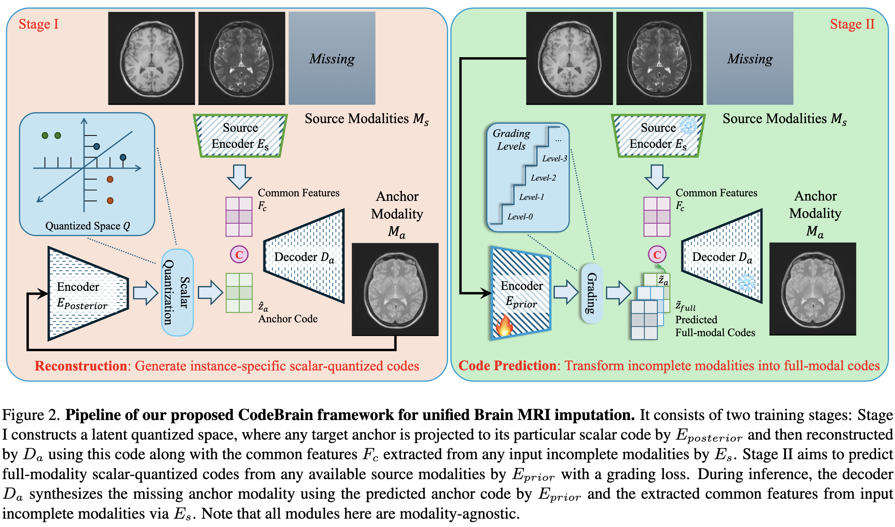
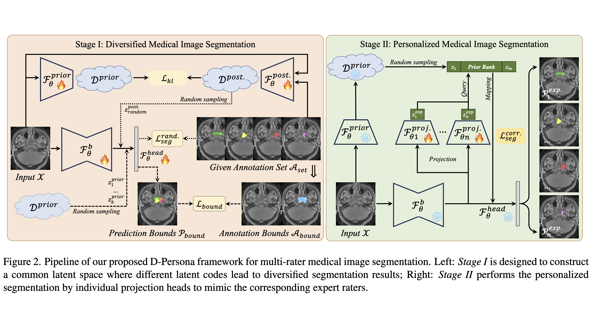
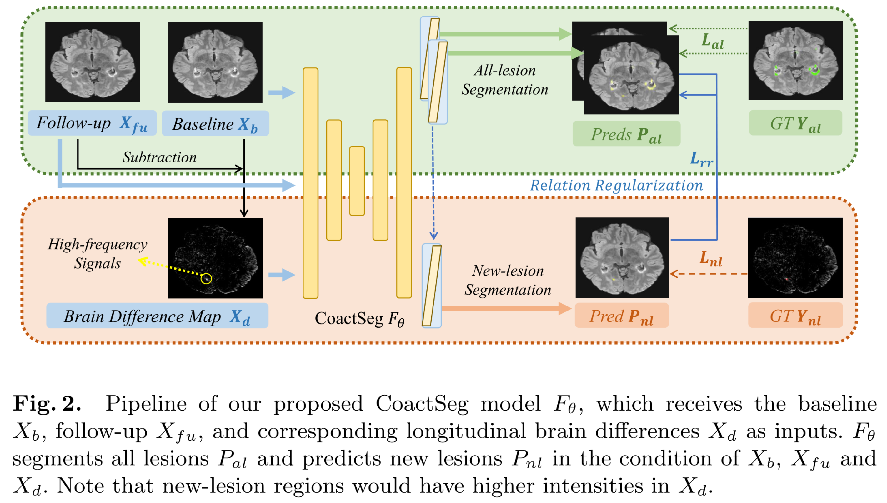

|
Yicheng(Eli) Wu 吴轶成Research AssociateAffiliation: Imperial College LondonCurrent Address: Room 344, Huxley Building, South Kensington Email: YCWUELI [at] GMAIL [dot] COM Google Scholar • GitHub Repository • LinkedIn |
Biography
- Introduction
- Working Experiences
- 2025.09-Present • Research Associate • Imperial College London
- 2025.03-2025.09 • Research Fellow • Monash, Faculty of IT
- 2023.03-2025.03 • Research Assistant • Monash, Faculty of IT
- 2023.12-2024.06 • Research Intern • Shanghai AI Lab
- 2020.08-2021.05 • Research Intern • Alibaba DAMO Academy
- 2019.05-2020.08 • Research Intern • Deepwise AI Lab
- Education Backgrounds
- 2021.06-2025.05 • Doctor of Philosophy • Supervisor: Prof. Jianfei Cai (IEEE Fellow) and A/Prof. Zongyuan Ge.
- 2017.09-2020.04 • Master of Engineering • Supervisor: Prof. Yong Xia.
- 2018.11-2019.05 • Visiting Scholar • Supervisor: A/Prof. Weidong(Tom) Cai and A/Prof. Yang Song.
- 2013.09-2017.06 • Bachelor of Engineering • Supervisor: Prof. Yong Xia.
-
Yicheng Wu is now a postdoc at Imperial College London, working with A/Prof. Wenjia Bai.
Yicheng's research interests lie in computer vision and medical AI, with a focus on exploiting AI techniques to streamline clinical workflows and unlock new possibilities in medical practice.
More recently, he has been investigating generative modelling in medical imaging, aiming to develop universal foundation models capable of enhancing various clinical-route data.
Faculty of Information Technology, Monash University, Australia
School of Computer Science and Engineering, Northwestern Polytechnical University, China
School of Computer Science, The University of Sydney, Australia
School of Computer Science and Engineering, Northwestern Polytechnical University, China
News
- [2025.09.20] I am very pleased to be listed in the Stanford/Elsevier World's Top 2% Scientists 2025.
- [2025.09.06] I am very pleased to serve as an area chair in CVPR 2026.
- [2025.08.27] I will give a talk in the International Postdoc Academic Seminar of Visual Intelligence on 30 Augest 2025, see here.
- [2025.07.26] I will be joining the Faculty of Medicine at Imperial College London, as a research associate (postdoctoral researcher).
- [2025.07.25] Three of my MICCAI/MedIA works are ranked among the Top 20/40 most-cited papers (2020-2025, Google Scholar).
- [2025.06.19] One co-authored journal paper is accepted in npj Artificial Intelligence, about brain MRI imputation.
- [2025.06.18] Two co-authored papers are accepted in MICCAI 2025, about MS lesion and Polyp Segmentation.
- [2025.05.30] Got my PhD degree from Monash!
- [2025.05.19] My PhD Thesis can be public accessed now, see here.
- [2025.04.30] I will give a talk in the CV Dept. Seminar of MBZUAI. Thanks for Yutong's invitation.
- [2025.01.22] I will give a talk about my understanding on clinical label/data varability in the HIT Webinar.
- [2025.01.17] I am very pleased to serve as an area chair in MICCAI 2025.
- [2024.12.12] I will be joining the Faculty of IT at Monash University, as a research fellow (postdoctoral researcher).
- [2024.10.01] Our team won the Runner-up position in the MBH-Seg challenge at MICCAI 2024. Congrats. to Jianghao.
- [2024.09.12] I am very pleased to share that our MC-Net+ work is selected as an ESI Highly Cited Paper.
- [2024.06.18] We open the MMIS-2024 grand challenge at ACM MM 2024. Welcome to join!
- [2024.04.09] I am very pleased to receive the CVPR DEI Support and Google Travel Grant to attend CVPR 2024.
- [2024.02.27] One paper was accepted by CVPR 2024 (Highlight), about Multi-rater Medical Image Segmentation.
- [2023.12.07] One journal paper was accepted by IJCV (IF-2023: 19.5), see Paper and Code. Congrats. to Zhonghua.
- [2023.10.12] I am very pleased to be selected as an IEEE Transactions on Medical Imaging (TMI) Distinguished Reviewer.
- [2023.07.25] I am very pleased to receive the 2023-FIT-Dean's Award for Excellence in Research by a Graduate Research Student.
- [2023.07.11] One paper was early accepted by MICCAI 2023, about Heterogeneous Data Training.
- [2022.07.04] One paper was accepted by ECCV 2022, about Weakly-Supervised Point Cloud Segmentation.
- [2022.07.01] One journal paper was accepted by MedIA (IF-2022: 13.828), see here.
- [2022.06.06] One journal paper was accepted by IEEE JBHI (IF-2022: 7.021), see here. Congrats. to Yiwen.
- [2022.06.03] Two papers were accepted by MICCAI 2022, about Semi-supervised Segmentation and Long-tailed Classification.
- [2022.03.03] One co-authored paper was accepted by CVPR 2022, about Unsupervised Proposal Generation.
- [2021.06.11] One paper was accepted by MICCAI 2021.
- [2020.08.01] During my gap year, I will work as a research intern at DAMO Academy, Alibaba Group.
- [2020.05.12] I received the M.E. degree from Northwestern Polytechnical University, supervised by Prof. Yong Xia.
- [2020.02.27] One journal paper was accepted by Neural Networks (IF-2020: 8.050).
- [2019.06.05] One paper was accepted by MICCAI 2019.
- [2018.05.31] I was selected as a co-authored master student supported by the China Scholarship Council (CSC).
- [2018.05.30] One paper was accepted by MICCAI 2018.
- [2017.06.20] I received the B.E. degree from Northwestern Polytechnical University, supervised by Prof. Yong Xia.
Selected Publications
-
* and † indicates the corresponding authorship and equal contribution, respectively.
Universal and Generative Medical Models
| Jianghao Wu, Yicheng Wu*, Yutong Xie, Wenjia Bai, You Zhang, Feilong Tang, Yulong Li, Yasmeen George, and Imran Razzak SAM-aware Test-time Adaptation for Universal Medical Image Segmentation Under Review, 2025. [Paper] | |
|  | Yicheng Wu†*, Tao Song†, Zhonghua Wu, Jin Ye, Zongyuan Ge, Zhaolin Chen, and Jianfei Cai CodeBrain: Imputing Any Brain MRI via Modality- and Instance-Specific Codes Under Review, 2025. [Paper] |
|  | Yicheng Wu†*, Xiangde Luo†, Zhe Xu, Xiaoqing Guo, Lie Ju, Zongyuan Ge, Wenjun Liao, and Jianfei Cai Diversified and Personalized Multi-rater Medical Image Segmentation CVPR 2024 (Highlight), pp. 11470-11479, 2024. [Paper, Code] |
Data-efficent Medical Models
|  | Yicheng Wu*, Zhonghua Wu, Hengcan Shi, Bjoern Picker, Winston Chong, and Jianfei Cai CoactSeg: Learning from Heterogeneous Data for New Multiple Sclerosis Lesion Segmentation MICCAI 2023, vol. 14227, pp. 3-13, 2023. [Paper, Code] |
 |
Yicheng Wu*, Zongyuan Ge, Donghao Zhang, Minfeng Xu, Lei Zhang, Yong Xia and Jianfei Cai Mutual Consistency Learning for Semi-supervised Medical Image Segmentation Medical Image Analysis (IF-2022: 13.828, ESI Highly Cited Paper), vol. 81, pp. 102530, 2022. [Paper, Code] |
 |
Zhonghua Wu†, Yicheng Wu†, Guosheng Lin* and Jianfei Cai Reliability-Adaptive Consistency Regularization for Weakly-Supervised Point Cloud Segmentation International Journal of Computer Vision (IF-2023: 11.6), vol. 132, pp. 2276-2289, 2024. [Paper, Code] |
 |
Yicheng Wu*, Zhonghua Wu, Qianyi Wu, Zongyuan Ge, and Jianfei Cai Exploring Smoothness and Class-Separation for Semi-supervised Medical Image Segmentation MICCAI 2022, vol. 13435, pp. 34-43, 2022. [Paper, Code] |
| Yicheng Wu, Minfeng Xu, Zongyuan Ge, Jianfei Cai*, and Lei Zhang Semi-supervised Left Atrium Segmentation with Mutual Consistency Training MICCAI 2021, vol. 12902, pp. 297-306, 2021. [Paper, Code] | |
 |
Zhonghua Wu, Yicheng Wu, Guosheng Lin*, Jianfei Cai, and Chen Qian Dual Adaptive Transformations for Weakly Supervised Point Cloud Segmentation ECCV 2022, vol. 13691, pp. 78-96, 2022. [Paper, Code] |
Effective Medical Models
 |
Yiwen Ye†, Chengwei Pan†, Yicheng Wu, Shuqi Wang, and Yong Xia* MFI-Net: Multiscale Feature Interaction Network for Retinal Vessel Segmentation IEEE Journal of Biomedical and Health Informatics (IF-2022: 7.021), vol. 26(9), pp. 4551-4562, 2022. [Paper] |
 |
Yicheng Wu, Yong Xia*, Yang Song, Yanning Zhang, and Weidong Cai NFN+: A Novel Network Followed Network for Retinal Vessel Segmentation Neural Networks (IF-2020: 8.050), vol. 126, pp. 153-162, 2020. [Paper] |
 |
Yicheng Wu, Yong Xia*, Yang Song, Donghao Zhang, Dongnan Liu, Chaoyi Zhang, and Weidong Cai Vessel-Net: Retinal Vessel Segmentation under Multi-path Supervision MICCAI 2019, vol. 11764, pp. 264-272, 2019. [Paper] |
 |
Yicheng Wu, Yong Xia*, Yang Song, Yanning Zhang, and Weidong Cai Multiscale Network Followed Network Model for Retinal Vessel Segmentation MICCAI 2018, vol. 11071, pp. 119-126, 2018. [Paper] |
Academic Awards and Activities
- 2025 • Stanford/Elsevier World's Top 2% Scientists 2025
- 2025 • MICCAI Travel Grant
- 2024 • Runner-up in the MBH-Seg challenge at MICCAI 2024
- 2024 • Google Travel Grant
- 2024 • CVPR DEI Support
- 2023,2024 • IEEE Transactions on Medical Imaging (TMI) Distinguished Reviewer
- 2023 • 2023-FIT-Dean's Award for Excellence in Research by a Graduate Research Student
- 2021-2024 • Monash Graduate Scholarship (MGS) and Monash International Tuition Scholarship (MITS)
- 2020 • NPU Excellent Postgraduate Thesis Award (Top 3%)
- 2019-2020 • NPU Key Seed Foundation of Innovation and Creation for Graduate Students
- 2019 • Inspur Postgraduate Scholarship
- 2018-2019 • Scholarship from China Scholarship Council (Joint Master Student)
- 2018 • SJTU-USYD Research Conversazione Best Research Presentation
- 2017 • NPU Excellent Undergraduate Thesis Award (Top 7%)
- Talks
- 2025.08.30 • International Postdoc Academic Seminar hosted by Visual Intelligence
- 2025.04.30 • CV Dept. Weekly Morning Seminar in MBZUAI
- 2025.01.24 • HIT Webinar
- Services
- 2025 • Area Chair in CVPR 2026
- 2025 • Area Chair in MICCAI 2025
- 2024 • Lead Organizer in the MMIS-2024 Challenge at ACM MM 2024
- Reviews
- MICCAI
- NeurIPS; ICLR; ICML
- CVPR; ICCV; ECCV
- MedIA, IEEE TMI, J-BHI
- IJCV, IEEE TPAMI, TIP, TNNLS, TCSVT
- Computer Vision and Image Understanding
- Computer Methods and Programs in Biomedicine
- 23-27 September 2025: MICCAI 2025, Daejeon, South Korea (Poster)
- 17-21 June 2024: CVPR 2024, Seattle, US (Highlight)
- 06-13 October 2023: MICCAI 2023, Vancouver, Canada (Poster)
- 18-22 September 2022: MICCAI 2022, Singapore (Poster)
- 27 September-01 October 2021: MICCAI 2021, Virtual Conference (Poster)
- 04-08 October 2020: OMIA7, Virtual Workshop (Online Presentation)
- 13-17 October 2019: MICCAI 2019, Shenzhen, China (Poster)
- 24 September 2019: MICS Webinar-MICCAI Conference (Online Oral Presentation)
- 13-14 July 2019: Medical Imaging Computing Seminar (MICS 2019), Suzhou, China (Poster)
- 23-26 November 2018: PRCV 2018, Guangzhou, China (Poster)
- 16-20 September 2018: MICCAI 2018, Granada, Spain (Poster)
- 20-22 April 2018: The 8th Vision and Learning Seminar (VALSE 2018), Dalian, China
Curiosity
古人之观于天地、山川、草木、虫鱼、鸟兽，往往有得，以其求思之深而无不在也。夫夷以近，则游者众；险以远，则至者少。而世之奇伟、瑰怪，非常之观，常在于险远，而人之所罕至焉，故非有志者不能至也。有志矣，不随以止也，然力不足者，亦不能至也。有志与力，而又不随以怠，至于幽暗昏惑而无物以相之，亦不能至也。然力足以至焉，于人为可讥，而在己为有悔；尽吾志也而不能至者，可以无悔矣，其孰能讥之乎?
《游褒禅山记》-王安石 (C.E. 1054)